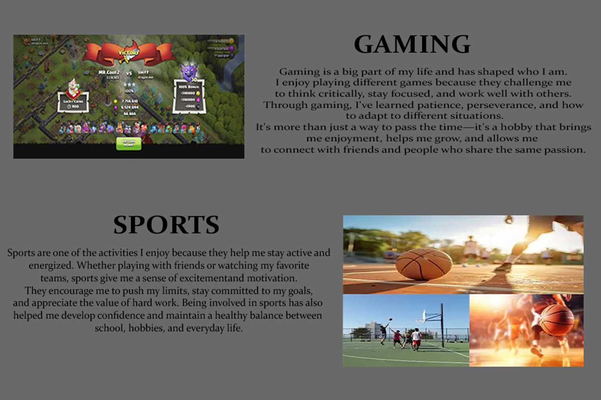
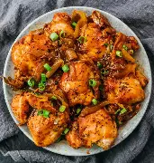

Cooking is one of the hobbies that allows me to be creative and express myself.
I enjoy trying new recipes, experimenting with different flavors, and preparing meals for
my family and friends. It has taught me to be patient, organized, and attentive to details.
For me, cooking is not only about making food but also about creating something meaningful that
brings people together and makes them feel appreciated.